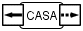

Na barra de menus, clique em “Arquivo”, e “Novo”, em seguida;
Na barra de tarefas, clique no botão  ;
;
No teclado, segure a tecla Ctrl e aperte N.
Uma ontologia é uma relação de conceitos e relações, assim como os mapas conceituais, só que as relações contêm várias frases de ligação. São usadas, no CMTool, pelos professores, para que eles definam conceitos e frases de ligação e, a partir daí, as proposições que eles acham mais corretas. Os mapas conceituais que seus alunos farão conterão os conceitos definidos. As proposições dos mapas serão avaliadas comparando-as com as relações contidas na ontologia, por meio de um algoritmo genético, o GAADT-CM, contido no CMTool.
Aqui serão descritos os passos para serem feitas ontologias.
Ao abrir o On_Tool, aparecerá a caixa de diálogo “Bem-vindo ao On_Tool”. Na lista de seleção, selecione a opção “Criar uma ontologia”, clicando OK em seguida.
Se quiser criar uma ontologia com o On_Tool já em execução, você pode seguir uma das 3 alternativas:
Na barra de menus, clique em “Arquivo”, e “Novo”, em seguida;
Na barra de tarefas, clique no botão  ;
;
No teclado, segure a tecla Ctrl e aperte N.
Se você tiver feito alguma modificação na ontologia em execução antes de você fazer uma das operações acima, surgirá o diálogo de “Salvar”. Saiba mais detalhes clicando aqui.
A primeira coisa a fazer é criar um conceito. Para isso, basta clicar duas vezes em um espaço em branco da área de desenho. Surgirá o diálogo de criação de elementos.
Nesta caixa de diálogo, note que aparecerão 2 tipos de elementos a serem criados:
Conceito: Nas proposições, podem receber e enviar arcos. Possuem setas flutuantes, que são usadas para criar as proposições.
Legendas: Servem apenas para fazer anotações na ontologia, que não fazem parte da ontologia, mas que podem explicá-la.
Pelo explicado acima, é recomendado que você escolha primeiramente desenhar um conceito. Escolha o tipo de elemento e clique em OK.
Agora você irá querer editar os elementos de uma ontologia. Para isso, basta usar o mouse, clicando duas vezes em cima do determinado elemento.
Ao clicar duas vezes em cima de um conceito ou de uma legenda, aparecerá uma caixa de diálogo com uma área de texto como a abaixo.

Você pode, então, digitar o novo rótulo e clicar em OK.
Para criar relacionamentos, você deve posicionar o cursor do mouse sobre um conceito. Surgirão duas setas flutuantes.

Posicione o mouse sobre uma das setas. Clique e segure o botão do mouse. Arrastando a seta, você verá uma linha surgir, para que lhe ajude a desenhar.

Solte o botão no lugar desejado. Será criada uma proposição, composta de mais um conceito, uma relação binária e arcos ligando os elementos, como você pode ver na figura abaixo.
A partir de agora, você pode ir criando suas ontologias, com duplos cliques e arraste de setas flutuantes, vindas de conceitos e de relações binárias. Uma boa dica é criar vários conceitos e, depois, fazer as proposições.
Para editar uma relação binária, clique duas vezes com o mouse em cima dela. Surgirá uma caixa de diálogo com uma árvore. Essa árvore contém a taxonomia de frases de ligação, de acordo com o explicado no início dessa seção.
Acima, você vê que o diálogo contém 3 áreas:
Árvore taxonômica , onde você seleciona um ramo. Cada ramo contém frases de ligação.
Frases de ligação, onde você seleciona as frases desejadas.
Descrição do nó da árvore taxonômica. A descrição muda de acordo com o nó selecionado.
Busque um supertipo na árvore. Segurando a tecla Ctrl, clique em cima das frases de ligação desejadas. Quando acabar, clique em OK.